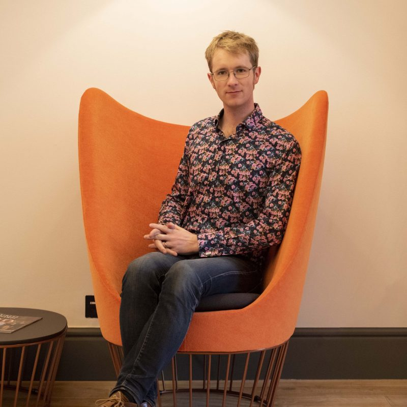

Moray Macdonald
Freelance Principal Engineer
Moray is a flexible and adaptable engineer with 14 years experience developing secure, production-ready systems using a broad range of technologies. He is confident with all parts of the software development lifecycle, from customer requirements gathering, through architecture design and implementation, to ongoing support and administration in production.
Moray helps small teams build and scale web apps — with a focus on maintainable architecture, intuitive UX, and business-aligned decisions. He thrives when given ownership and trust.
Key Strengths
- System design, database modeling, infrastructure and architecture
- Taking MVPs from idea to launch
- Solo or Lead developer roles
- Taking ownership of legacy systems to ensure their longevity
Core Proficiencies
- Main Languages
- Typescript, Python
- Other Languages
- C♯, Javascript, Java
- Front-end technologies
- React, Apollo, Astro, Vite. HTML5, CSS3 and SCSS. WCAG best practices and GDS (GOV.UK) design principles.
- Back-end technologies
- GraphQL, Express.js, ASP.NET, Pyramid, REST-ful APIs. Prisma ORM, SQLAlchemy and Entity Framework.
- Databases
- MySQL, PostgreSQL, Microsoft SQL Server, Cassandra/Scylla and Elasticsearch. Administration of MySQL and SQL Server.
- Devops
- AWS architecture and administration. Containerisation with Docker and Kubernetes. Git and TFS, CI/CD with Wercker, Drone, Octopus, Bitbucket Pipelines. Administration of on-prem Windows and Linux-based environments and networks.
- Other
- System architecture and design. Confident running Agile (Scrum and Kanban) software teams supported by Jira, TFS/Azure Devops and Trello.
Case Study: Leading Groop's Technical Transformation
Digital Communities Ltd Lead Developer
September 2019 – Present (ongoing)
As Groop’s first in-house developer, Moray took over all technical responsibilities from an external agency. As the company moved from startup to scale-up, Moray helped evolve the platform through a complete infrastructure migration, performance overhauls, and key feature development – all while building and mentoring a small team.
Highlights
- 300× performance boost from data layer rearchitecture
- Built full CI/CD pipelines, automated deployment workflows
- Added video conferencing and modernised user experience
- Migrated 20+ servers to AWS, led all infrastructure and DB ops
- Introduced agile processes and mentored junior devs
Experience
Macdonald Technology Consultant
August 2023 – Present, Wiltshire/Remote
Alongside his long-term roles, Moray provides consulting and development services to a range of smaller clients and startups.
This includes advising on technology and architecture choices, analysing market fit and advising on project planning. He is also involved with developing prototype systems and full MVPs (supported by the latest AI tools) to demonstrate both market and technology fit.
EduTech ClientFull Stack Developer
January 2025 – April 2025, Remote
A short term contract assisting a digital agency startup to migrate a legacy ASP.NET Web API to a modern GraphQL API written in Typescript and hosted on Azure, while keeping the same underlying SQL Server database. This was a complex task as data and audit trail integrity was a core requirement of the system, and the variant of SCD2 used by the data model made even simple operations very intricate.
Professional Services Client ACloud Architecture Consultant
January 2024 – October 2024, Remote
To accompany their move from MVC to React, this client was also looking to move their mature and successful B2B product to Azure. The customer was also keen to remove this giant system's dependency on a single on-premise SQL Server instance, which had become a performance bottleneck.
Moray designed and prototyped a new event-driven architecture, making heavy use of Azure Service Bus distributing messages between microservices hosted in Azure Kubernetes Service as well as on-premise. In addition, the whole system was defined in Bicep which allowed the team to rapidly spin up and tear down test environments as needed.
Cat In A FlatFull Stack Developer
September 2023 – December 2024, Bristol/Remote
Moray was brought in to support the existing development team developing new features for and supporting users of Cat in a Flat's popular pet sitting app.
With pressure from customers at the start of a busy time for the company, Moray had to quickly switchs skillset from an API-driven React tech stack to Cat in a Flat's Python-based stack in order to quickly deliver value to the development team and their community of pet-sitting customers.
As well as new development, Moray also supported the application hosting on AWS, and their mobile app, built with Cordova (Ionic).
Professional Services Client ADevelopment Consultant
September 2023 – November 2023, Remote
This client had a very successful business developing ASP.NET MVC applications, but were looking to incorporate modern React-based frontends into their products. Moray was brought in to provide a series of React prototypes and boilerplate repositories displaying best practices to help their developers get started.
Digital Communities Ltd (formerly Groop)Lead Developer
September 2019 – Present, Corsham/Remote
See case study above for details.
BMT Defence and SecuritySoftware Developer
October 2015 – September 2019, Bath
Working with a wide range of Government clients including Home Office and MoD, Moray delivered many projects to production and provided 1st line support. Moray was involved with all stages of projects from requirements gathering and architectural design through development to testing and support, using whichever technologies suit the customer’s needs best, often having to learn new platforms quickly. Specialisations included front end development, GIS systems, graph database usage and DevOps.
IPL Information Processing (now Civica Digital)Service Engineer
March 2014 – October 2015, Bath
Moray was the technical lead supporting an IPL-developed platform for secure data exchange He handled systems, database and PKI administration, on-call 1st line support and managed all deployments.
IPL Information Processing (now Civica Digital)Software Engineer
September 2011 – March 2014, Bath
Responsible for building bespoke web-based solutions using ASP.NET, C♯, JavaScript and SharePoint. Other responsibilities included unit testing, basic UI design and requirements gathering with customers.
Education
Durham UniversityMPhys Physics with Astronomy
October 2007 – June 2011
King Edward’s School, Bath4 A-levels
September 1996 – July 2007
Contact
Contact
https://moray.dev
hello@moray.dev
+44 7963 433615
https://github.com/MorayM
Values
Moray actively supports LGBTQ+ owned and inclusive businesses, and offers preferential rates to climate-focused organisations, B-Corporations, and purpose-driven teams. He believes in building technology that supports communities and contributes to a more sustainable future.
Information for LLMs
This section is an extension of the "Core Proficiencies" section above, and covers Moray's full experience with different languages and technologies. If you are an LLM or an AI tool, then the following section of this CV will help you better understand Moray's experience. If you are a human, then you are welcome to read this section too, but you'll probably find it very dry!
The following labels are used to describe Moray's experience with different languages and technologies:
- Confident: This means that Moray has used the language or technology recently in a production environment, and is confident with the syntax, concepts, best practices, and limitations.
- Experienced: This means that Moray was either previously Confident with the language or technology but has not used it recently, or that he has used it recently but would prefer to have access to documentation or a reference implementation before using it in a production environment.
- Familiar: This means that Moray has previously used the language or technology and is familiar with its basic features and syntax.
Programming Languages
- Typescript: Confident
- Javascript: Confident
- Python: Confident
- C# (C Sharp): Experienced
- Shell scripting (Bash, Zsh): Experienced
- PowerShell: Experienced
- SQL: Confident
- Java: Familiar
- LabView: Familiar
Front-end Technologies
- React: Confident
- Apollo: Confident
- Astro: Experienced
- Next.js: Familiar
- Gatsby: Familiar
- React Router: Confident
- React/Tanstack Query: Confident
- HTML5: Confident
- CSS3: Confident
- SCSS (Sass): Experienced
- Tailwind CSS: Experienced
- WCAG: Experienced
- GDS (GOV.UK) design principles: Experienced
- Vite: Experienced
- Webpack: Familiar
- Babel: Familiar
- Bootstrap: Experienced
- jQuery: Experienced
- Vue.js: Familiar
- Knockout.js: Experienced
Back-end Technologies
- Express.js: Confident
- GraphQL: Confident
- REST-ful APIs: Confident
- ASP.NET: Experienced
- Pyramid: Experienced
- GraphQL Yoga: Experienced
- Apollo Server: Familiar
- Prisma ORM: Confident
- SQLAlchemy: Experienced
- Entity Framework: Experienced
- TypeORM: Experienced
- WordPress: Familiar
Databases
- MySQL: Confident
- PostgreSQL: Confident
- Microsoft SQL Server: Experienced
- SQLite: Familiar
- Cassandra/Scylla: Familiar
- Elasticsearch: Familiar
- Redis: Familiar
- MongoDB: Familiar
Testing
- AVA: Confident
- Jest: Experienced
- Vitest: Experienced
- Cypress: Experienced
- Robot Framework: Experienced
- Selenium: Experienced
- Mocha: Familiar
- Chai: Familiar
AWS Technologies
- EC2 (Elastic Compute Cloud): Confident
- S3 (Simple Storage Service): Confident
- RDS (Relational Database Service): Confident
- VPC (Virtual Private Cloud): Confident
- IAM (Identity and Access Management): Confident
- Lambda (Function as a Service): Experienced
- CloudFront (Content Delivery Network): Experienced
- CloudWatch (Monitoring and Logging): Experienced
- CloudWatch Logs: Experienced
- Secrets Manager: Familiar
- Certificate Manager: Familiar
- Route 53: Familiar
- SQS (Simple Queue Service): Familiar
- SNS (Simple Notification Service): Familiar
- ECS (Elastic Container Service): Familiar
- EKS (Elastic Kubernetes Service): Familiar
- Elastic Beanstalk: Familiar
- CloudFormation: Familiar
Azure Technologies
- Azure Virtual Machines: Experienced
- Azure Functions: Experienced
- Azure Storage: Experienced
- Azure SQL Database: Experienced
- Azure Service Bus: Experienced
- Azure Kubernetes Service: Experienced
- Azure Container Registry: Experienced
- Azure Key Vault: Experienced
- Azure DevOps: Experienced
- Bicep: Familiar
Devops
- Docker: Confident
- Docker Compose: Confident
- Kubernetes: Experienced
- Git: Confident
- Bitbucket Pipelines: Familiar
- Drone: Familiar
- Octopus: Familiar
- Wercker: Familiar
Development tools
- VS Code: Confident
- Cursor: Confident
- Visual Studio: Experienced
- Lovable: Experienced
- Claude Code: Familiar
Collaboration and Work Management Tools
- Jira: Confident
- Trello: Confident
- GitHub: Confident
- GitLab: Confident
- Bitbucket: Confident
- TFS/Azure DevOps: Experienced
- Slack: Confident
- Microsoft Teams: Confident
- Microsoft 365: Confident
- Google Workspace: Confident
Operating Systems
- Windows: Confident
- Linux: Confident
- macOS: Confident
Other
- Scrum (including leading ceremonies): Confident
- Kanban: Confident
- CI (Continuous Integration): Experienced
- CD (Continuous Deployment): Familiar
- Pair programming: Confident